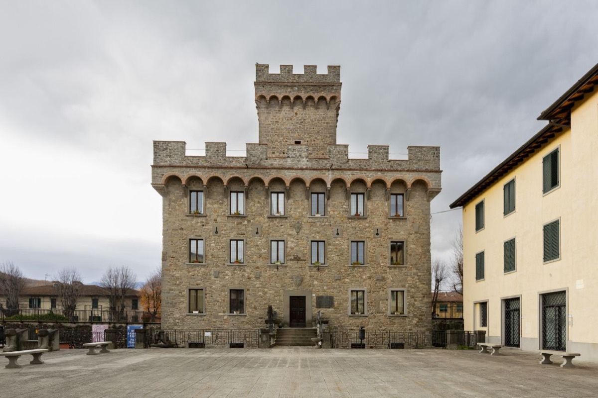

Percorso 8 · Storico
Il sentiero del Risorgimento
Rocambolesche avventure, fughe e aneddoti ai tempi dell’unità d’Italia che si intreccia con i percorsi del Gran Tour
A PiediCon il Tuo Cane
A Piedi
- Durata
- 5/6 giorni
- Lunghezza
- 128 Km
- Difficoltà
- Difficile
- Dislivello
- 9088 Mt
Traccia (127,9 km)PartenzaArrivo
Porta il percorso con te
Scarica la traccia per il navigatore o per un'app come Komoot, OsmAnd o Wikiloc.
Sentieri e cammini attraversati
- Sentieri CAI
- nr. 4 - nr. 645 - nr. 7 - n. 60 - nr. 687 - nr. 70 - nr. 609 A - nr. 609 - nr. 701 - nr. 729 - nr. 791 - nr. 801 - nr. 917 - nr. 735 - nr. 19 - nr. 52 - nr. 420
- Cammini
- SOFT 11 - Via degli Dei SOFT 12 - Grande Escursione Appenninica SOFT 9 - Via della Lana e della Seta SOFT 10
Descrizione del percorso
Leggi il racconto di Orme del Mugello
Il cammino parte da Marradi, il paese celebre non solo per aver ispirato il poeta Dino Campana, ma anche per le sue specialità enogastronomiche e per i suoi prodotti (tra questi i “marroni” di Marradi). Il borgo giocò un ruolo di rilievo durante il Risorgimento italiano, grazie alla sua posizione strategica lungo le vie che univano la Toscana alla Romagna. Un episodio particolarmente significativo fu il passaggio di Giuseppe Garibaldi nel 1849, mentre fuggiva dopo la caduta della Repubblica Romana. Attraversata la Toscana e il Mugello, Garibaldi arrivò nei dintorni di Marradi accompagnato da Giovannina Bonicelli, una delle donne che lo affiancarono nel viaggio. Qui ricevette sostegno da alcuni abitanti favorevoli alla causa unitaria, i quali, mettendo a rischio la propria vita, lo aiutarono a proseguire il cammino verso l’Emilia. Nel 1860, con l’Unità d'Italia ormai prossima, numerosi giovani di Marradi si arruolarono volontari nell’esercito garibaldino per prendere parte alla spedizione dei Mille e alle guerre d’indipendenza.
In continuità con Marradi si attraversa il borgo di Popolano; situato lungo il fiume Lamone, è stato un punto strategico sin dall'antichità, grazie al ponte che costituiva un passaggio obbligato. Prima dell’Unità d’Italia, ospitava la dogana, segno della sua rilevanza nei traffici tra Toscana e Romagna. Durante il Risorgimento, nel luglio 1849, Giuseppe Garibaldi attraversò il borgo mentre fuggiva verso Venezia dopo la caduta della Repubblica Romana. Gli abitanti, pur correndo rischi, offrirono aiuto ai garibaldini, consolidando il legame del paese con la causa indipendentista.
Popolano conserva tracce del suo passato medievale, tra cui un castellare, poi trasformato in campanile della chiesa di Santa Maria. Questo edificio custodisce opere artistiche di pregio, come un tabernacolo della bottega dei Della Robbia. All’interno della canonica, dipinti e iscrizioni testimoniano un’antica presenza monastica.
Nei secoli, Popolano passò sotto il dominio dei Conti Guidi e successivamente del Granducato di Toscana. Nell’Ottocento, parte della chiesa e del monastero divennero una residenza signorile, decorata con affreschi mitologici. Dopo un lungo abbandono, oggi l’edificio è in fase di ristrutturazione per essere trasformato in una struttura ricettiva.
Ci allontaniamo dalla civiltà. Nel cuore dei boschi dell’Appennino Tosco-Romagnolo, troviamo la Chiesa di San Michele Arcangelo a Valnera, un antico luogo di culto. Il nome Valnera potrebbe derivare dal latino vallis nigra, riferendosi alle fitte foreste che un tempo circondavano l’area, rendendola ideale per la meditazione. Edificata nel Medioevo, la chiesa è legata al culto di San Michele, diffuso nei territori di confine. Costruita in pietra locale, ha subito modifiche nei secoli XVII e XVIII, mantenendo il suo carattere essenziale. Nel 1849, Giuseppe Garibaldi, in fuga dopo la caduta della Repubblica Romana, vi transitò insieme a don Giovanni Verità e al capitano Leggero, sfuggendo agli austriaci. Per secoli, la chiesa ha rappresentato un punto di riferimento per la comunità, fungendo anche da scuola e rifugio durante la guerra.
Sempre collegata alla fuga di Garibaldi, non si può non citare Gamberaldi, un suggestivo borgo che vanta una storia affascinante. Il suo nome potrebbe derivare dal latino cambarus, riferendosi ai gamberi presenti nei corsi d’acqua locali, oppure da un antico nome longobardo. Le prime testimonianze storiche risalgono al Medioevo, quando il villaggio era un piccolo insediamento rurale legato ai monaci vallombrosani, che ne gestivano le terre. Nel tempo, Gamberaldi divenne un punto di sosta strategico lungo le vie commerciali tra Firenze e Faenza, frequentato da mercanti e pellegrini diretti a Roma o verso l’Adriatico.
Inizia la discesa che ci porta verso la Badia di Susinana (375 m). L’edificio sorge su un poggio tra i torrenti Senio e Rio Cesare ed era un tempo raggiungibile tramite un ponte ad arco e un antico sentiero selciato, oggi in disuso. L’accesso attuale avviene attraverso una strada che costeggia un agriturismo. Fondata nel 1090 come monastero cluniacense, passò successivamente ai Vallombrosani. Distrutta nel 1137, venne ricostruita tra il XVII e XVIII secolo, raggiungendo il suo massimo splendore. Fu legata alla famiglia Pagani, e tra i suoi ospiti più noti vi fu Maghinardo Pagani, signore di Faenza e Imola, citato da Dante nell’Inferno per la sua abilità politica. Nel 1808, la Badia fu soppressa dalle autorità francesi e, dopo un periodo di gestione delle monache domenicane di Marradi, chiuse definitivamente nel 1866 con le leggi di soppressione degli ordini religiosi. Anche dalla Badia passò Garibaldi, tant’è che la popolazione locale, fedele agli ideali di libertà, istituì Il Sentiero di Garibaldi, che collega Gamberaldi, Gruffieto e Susinana, ripercorrendo le tappe della sua fuga, attraversando paesaggi incontaminati e luoghi carichi di memoria.
Nel 1997, due monaci benedettini riportarono la Badia a essere un luogo di spiritualità, ma nel 2016 dovettero lasciarla a causa dell’età avanzata e del rigido clima, segnando un nuovo capitolo nella storia del monastero.
Una breve salita, seguita da un’altrettanta breve discesa, ci separa dalle prime case di Palazzuolo sul Senio; borgo medievale immerso nella valle del Senio, al confine tra Toscana ed Emilia- Romagna. La sua posizione strategica lo ha reso, fin dall’Alto Medioevo, un crocevia di commerci e viandanti. Nel XIII secolo, fu controllato dalla famiglia Ubaldini, per poi essere conteso tra i Malatesta e i Medici a causa della sua importanza economica e militare. Solo nel XVIII secolo entrò definitivamente nel Granducato di Toscana, pur mantenendo forti legami con la Romagna, riscontrabili nel dialetto, nelle tradizioni e nella gastronomia. Passeggiando tra le sue strade lastricate, si respira un’atmosfera autentica, con case in pietra e torri medievali. La centrale Piazza Garibaldi ospita la Chiesa di Santo Stefano e palazzi storici con portici suggestivi. A dominare il borgo è la Rocca degli Ubaldini, antica fortificazione che regala una splendida vista sulle colline circostanti. Il fiume Senio, che attraversa il paese, modella il paesaggio con angoli suggestivi e pozze naturali, ideali per una pausa estiva. I sentieri lungo le sue sponde portano a boschi, castagneti e vecchi mulini abbandonati. Palazzuolo offre anche un interessante patrimonio culturale: il Museo Archeologico dell'Alto Mugello, con reperti medievali e rinascimentali, e il Museo delle Genti di Montagna, dedicato alle tradizioni locali.
Riprendiamo il sentiero in salita passando per Monte Faggiola (1031 m), fino ad arrivare al Passo del Paretaio (880 m). Il toponimo "Paretaio" deriva dal termine "paretaia", che in italiano arcaico indica un luogo destinato alla cattura degli uccelli mediante reti o trappole. Questa denominazione suggerisce che in passato l'area fosse utilizzata per tali attività venatorie, data la sua posizione strategica e la ricchezza faunistica. Durante il Risorgimento, il Passo del Paretaio rivestì un ruolo significativo come via di transito per le truppe garibaldine. La conformazione montuosa e boscosa dell'area offriva riparo e percorsi sicuri per i patrioti in fuga. Nel corso della Seconda Guerra Mondiale, il passo divenne teatro di operazioni partigiane. La 36ª Brigata Garibaldi "Bianconcini" utilizzava questi sentieri per spostarsi tra le valli e organizzare azioni di resistenza contro le truppe nazifasciste. Oggi, in memoria di tali eventi, si svolge annualmente una camminata storica rievocativa che ripercorre i sentieri utilizzati dalle staffette partigiane, con partenza da Imola e arrivo al Passo del Paretaio.
Si prosegue in discesa fino ad arrivare a Coniale, paese che si sviluppa lungo la valle del fiume Santerno, in un territorio che per secoli ha rappresentato un punto di passaggio strategico tra le due regioni. Il paesaggio circostante, caratterizzato da boschi rigogliosi e dolci pendii, ha reso Coniale una meta suggestiva già a partire dal Grand Tour, quando viaggiatori e intellettuali europei attraversavano questi luoghi alla ricerca delle meraviglie naturali e delle tracce della storia italiana. L’origine del toponimo "Coniale" è incerta, ma si pensa derivi dal latino confluens, in riferimento alla confluenza di piccoli corsi d’acqua nel fiume Santerno. Un’altra ipotesi lega il nome alla presenza di antichi insediamenti di epoca romana, che sfruttavano il territorio per il pascolo e l’agricoltura. Durante il Risorgimento, Coniale fu teatro di un episodio significativo legato alla fuga di Giuseppe Garibaldi nel 1849. Dopo la caduta della Repubblica Romana, Garibaldi, in fuga dalle truppe austriache, trovò rifugio presso l'osteria di Casa Vivoli a Coniale, accompagnato dal fidato sacerdote Don Giovanni Verità. Mentre si riposavano, furono sorpresi dall'arrivo di una pattuglia della Guardia di Finanza. Grazie alla prontezza di Don Verità, che riconobbe il brigadiere e riuscì a distrarre le guardie offrendo loro da bere, Garibaldi evitò l'arresto e poté proseguire la sua fuga.
Su comodo percorso che attraversa agglomerati di case, si arriva al Sasso di San Zanobi (900 m).
La sfida di San Zanobi con il Diavolo
Il Sasso di San Zanobi è legato a una leggenda secondo cui il Diavolo, temendo le conversioni del santo, lo sfidò a una prova di forza: entrambi dovevano trasportare un enorme macigno dall’Idice alla collina. Il vincitore avrebbe ottenuto le anime locali. Il Diavolo faticò con il suo sasso, mentre San Zanobi, aiutato da Dio, sollevò il suo con un dito e lo portò molto più lontano. Sconfitto, il Maligno scagliò il suo macigno con rabbia, frantumandolo in fiamme. Un frammento di questa pietra, chiamato Sasso della Mantesca, si trova oggi nella Valle del Sillaro
Il Sasso di San Zanobi non è solo un’importante formazione geologica, ma anche un luogo ricco di storia. Un tempo qui sorgeva la chiesa di San Zanobi, menzionata nei registri del 1299, ma distrutta durante la Seconda Guerra Mondiale. Inoltre, la zona ospitava una rocca appartenente agli Ubaldini, signori del Mugello e dell’Appennino tosco-romagnolo. Dal punto di vista geologico, il Sasso è un’ofiolite, una roccia con venature verdastre e violacee, risultato della trasformazione di antichi fondali oceanici. Originatosi circa 150 milioni di anni fa, è un frammento di crosta oceanica sopravvissuto ai processi di subduzione e sollevato fino alla superficie. Accanto a esso si trovano altre due formazioni simili: il Sasso della Mantesca, dai riflessi blu e bianchi, e il Sasso delle Macine. San Zanobi, vescovo di Firenze tra IV e V secolo, fu un instancabile evangelizzatore. Secondo la tradizione, incontrò Sant'Ambrogio nei pressi di Malomonte e, da allora, le sue predicazioni si fecero ancora più efficaci. Ogni anno, la comunità celebra la Festa di San Zanobi la prima domenica di luglio, mantenendo vivo il legame tra la storia, la fede e il territorio.
Ancora pochi chilometri e giungiamo in un altro luogo legato alla fuga di Giuseppe Garibaldi insieme al patriota Don Giovanni Verità, il Passo della Raticosa. Il passo, situato tra le province di Firenze e Bologna, è uno dei valichi più significativi dell’Appennino tosco-emiliano. Da sempre punto di collegamento tra Emilia e Toscana, ha svolto un ruolo cruciale nella storia e nel commercio tra le due regioni. Il nome "Raticosa" potrebbe derivare dal latino "rata", che significa "piano", riferendosi al suo altopiano a circa 900 metri di altitudine. Nel Medioevo, il passo era un'importante via di comunicazione tra Bologna e Firenze, facilitando scambi commerciali e viaggi. Tuttavia, il suo valore storico si accentuò nel Risorgimento. Il valico, situato tra il Granducato di Toscana e lo Stato della Chiesa, divenne un simbolo della lotta per l’unità d’Italia. Anche durante la Seconda Guerra Mondiale il Passo della Raticosa fu teatro di scontri strategici: le truppe nazifasciste cercarono di difendere la zona, ma furono sconfitte dai partigiani e dagli alleati, segnando la liberazione dell’Appennino. Oggi, il passo è celebre per la sua bellezza paesaggistica e per le antiche leggende di briganti e viandanti. È frequentato da escursionisti e motociclisti che percorrono le storiche strade della transumanza, immergendosi nella storia e nella natura di questo suggestivo angolo d’Italia.
Dal Passo della Raticosa a Filigare il tratto è breve.
Nel Medioevo, Filigare era un punto strategico di controllo, ospitando una stazione doganale dove venivano ispezionate le merci e riscossi i dazi. Questo passaggio tra Toscana e Romagna rappresentava non solo un confine geografico, ma anche fiscale e amministrativo. Oggi restano pochi ruderi della dogana, ma il ricordo della sua importanza vive nella memoria locale. Situato lungo la strada Faentina, Filigare era tappa obbligata per molti viaggiatori del Grand Tour, tra cui scrittori e artisti diretti a Firenze. Si narra che persino Stendhal abbia attraversato questi luoghi, affascinato dai paesaggi selvaggi dell’Appennino. Accanto alla dogana sorgeva un’antica locanda, famosa per la sua cucina rustica e il vino robusto, spesso frequentata da briganti. Nei pressi del borgo si trova una croce di pietra dall’origine incerta: alcuni credono sia un ex voto di pellegrini, altri un memoriale per un viandante assassinato. Per secoli, Filigare è stato sinonimo di ristoro, rifugio e mistero, intrecciando storie di viaggiatori, doganieri e rivoluzionari.
il fenomeno del Grand Tour
Il Grand Tour fu un viaggio educativo intrapreso dai giovani aristocratici europei tra il XVII e il XIX secolo, considerato un rito di passaggio per la formazione culturale. Italia e Francia erano le mete principali, ricche di arte, storia e filosofia. I viaggiatori visitavano città come Roma, Firenze e Venezia per studiare l’Antichità, il Rinascimento e la politica. Questo fenomeno influenzò la cultura occidentale, promuovendo la diffusione del classicismo e arricchendo il patrimonio artistico e intellettuale dell’epoca.
Dopo un lungo tratto di strada, arriviamo in prossimità del punto più alto di tutto il cammino.
Il Monte Beni, con i suoi 1.264 metri, domina l’Appennino tosco-romagnolo offrendo panorami spettacolari sulla valle di Firenzuola e sui borghi circostanti. La sua posizione lo ha reso un punto strategico nel corso dei secoli, sia per il controllo del territorio che per le vie di comunicazione. Nei pressi della vetta si trova la Buca delle Fate, dove sorgono i resti di un’antica rocca appartenente agli Ubaldini, che un tempo sorvegliava il percorso tra il Mugello e Monghidoro. Dalla cima, in giornate limpide, è possibile scorgere l’Adriatico e le Alpi. Il nome "Monte Beni" potrebbe derivare dagli Ubaldini o da antiche radici etrusche. La rocca, documentata da vari storici, crollò per eventi naturali e perse importanza con l’apertura di nuove strade. Oggi il Monte Beni è un’area protetta, apprezzata per la natura e la storia, meta di escursionisti e studiosi, testimone silenzioso di secoli di vicende umane. Da una bellezza naturale ad un luogo creato dall’uomo, che racchiude storia e mistero, il paese di Covigliaio.
Con meno di cento abitanti, il borgo è un angolo tranquillo dell'Appennino tosco-emiliano, ma anche un luogo di rilevanza storica e culturale. La sua posizione privilegiata lo ha reso, nei secoli, una meta di sosta per numerosi viaggiatori e personaggi illustri. Il paese è noto per la qualità dell'aria fresca e salubre, e per le sue acque benefiche, che ne fanno una meta estiva apprezzata. Il panorama che si gode dalla frazione, che si affaccia sulla valle del Santerno e sulle montagne circostanti, è mozzafiato. La sua storia si intreccia con eventi significativi, in particolare durante il periodo risorgimentale, quando il passo divenne una via di transito per patrioti e protagonisti dell’unità d'Italia. Il cuore del paese è segnato dalla Chiesa di San Matteo e Santa Cecilia, consacrata nel 1860, che ospita un altare policromo, donato dal granduca Leopoldo II di Toscana tra il 1628 e il 1641. Nei dintorni si trova l'Oasi di Covigliaio, un'area protetta che ospita una fauna locale variegata, tra cui mufloni, daini e scoiattoli. Il nome "Covigliaio" potrebbe derivare dal termine "coviglio", che richiama l'idea di un rifugio o nascondiglio, simbolico del suo ruolo di tappa obbligata per chi attraversava l'Appennino. Dal Medioevo fino ai giorni nostri, il passo ha visto il passaggio di numerosi personaggi storici, tra cui re, regine, poeti e scrittori, nonché di leggendari protagonisti come Garibaldi e Napoleone. Il Covigliaio è stato anche un luogo di rifugio e di incontro per chi era in fuga o alla ricerca di riposo. Tuttavia, uno degli episodi più significativi è legato alla nascita del tricolore italiano. Nel 1794, due studenti, Zamboni e De Rolandis, rifugiatisi a Covigliaio dopo aver organizzato un volantinaggio contro il papato a Bologna, crearono la prima versione della bandiera italiana, un simbolo di una nuova Italia. La loro impresa, un atto simbolico, fu un momento cruciale nella storia dell'unità d'Italia. Durante i lavori di ristrutturazione dell’albergo locale, che ora ospita una residenza per anziani, fu rimossa una lapide scritta da Giosuè Carducci che celebrava l'eroismo di Zamboni e De Rolandis. Una copia di questa lapide si trova oggi nell'atrio dell’Università di Bologna. Il Covigliaio ha anche un forte legame con la cultura del Grand Tour. Tra gli illustri scrittori che vi si fermarono, ci furono Walter Scott e Fenimore Cooper, autori di leggendari romanzi storici come Ivanhoe e L'ultimo dei Mohicani. Il marchese de Sade visitò il Covigliaio, ma non sembrò apprezzare la cucina locale, a differenza delle dame inglesi del Grand Tour, che raccontavano storie di viaggi e avventure tra un piatto e l’altro. Le leggende sulle osterie non mancano: si dice che alcuni pellegrini venissero uccisi durante la notte per il denaro che portavano con sé, aggiungendo un'ombra sinistra alla bellezza del luogo. Un altro capitolo fondamentale della storia del Covigliaio è legato a Napoleone, che percorse la "Via Napoleonica" durante le sue campagne. Il passo era una delle principali rotte per chi attraversava l'Appennino in direzione di Firenze o Bologna. Fino all’avvento delle moderne autostrade, Covigliaio era una tappa importante per i viaggiatori. Il suo "Albergo della Posta", fondato nel XVII secolo, era inizialmente una stazione di posta, poi divenne un luogo di accoglienza per numerosi personaggi illustri, tra cui Re Ferdinando I delle Due Sicilie, Carlo Alberto di Savoia, lo Zar Nicola I di Russia, e Papa Pio IX. Nel XX secolo, l’albergo cambiò nome in "Hotel Gianna" dopo essere stato noto come "Hotel Baglioni" e "Hotel Du Parc", accogliendo anche personaggi come Tyrone Power e Re Faruq d'Egitto.
Covigliaio e il suo “microcosmo”
Il Covigliaio non è solo un luogo di passaggio, ma un crocevia di storie che raccontano la nascita dell’Italia moderna. Ogni angolo di questo borgo custodisce la memoria di un lungo cammino verso l’unità, dalle gesta del Risorgimento alla creazione del tricolore, passando per la tradizione culturale del Grand Tour. Il Covigliaio è, dunque, un microcosmo che racconta non solo il passato di un piccolo paese, ma anche la grande storia di una nazione
Ancora un breve tratto in salita, prima di cominciare una lunghissima discesa che ci porterà in primo luogo a Santa Lucia, situata nel territorio di Barberino di Mugello. Il borgo deve il suo nome a Santa Lucia di Siracusa, figura associata alla luce e alla speranza, e conserva un fascino particolare grazie al suo paesaggio naturale e alle testimonianze storiche risalenti a epoche passate, in particolare al periodo risorgimentale.
Circondata dalle montagne del Mugello, Santa Lucia ha sempre attirato viaggiatori e curiosi, mantenendo il suo valore culturale e storico. Un evento significativo che ha lasciato il segno nella memoria del borgo è il passaggio di Giuseppe Garibaldi. Il celebre condottiero fece una sosta in una delle locande del posto, dove fu accolto calorosamente dagli abitanti. In particolare, presso l’antica locanda di Santa Lucia all’Ostale, Garibaldi si fermò per rifocillarsi, e ancora oggi è conservato il tavolo a cui si sedette. A testimonianza di questo storico episodio, una targa e una lapide sono state apposte sulla facciata principale dell’edificio, ricordando il legame del borgo con la figura dell’eroe dei due mondi. Altra frazione attraversata dal percorso è quella di Montecarelli. Nel XIV secolo apparteneva agli Alberti, una potente famiglia ghibellina. Tra i suoi membri, Tano Alberti divenne un simbolo di resistenza contro Firenze.
Dopo la caduta del castello natale nel 1340, Tano si alleò con i Visconti, cercando di riconquistare i territori perduti. Nel 1351 riuscì a riprendere Montecarelli e Montevivagni, trasformandoli in basi strategiche. Tuttavia, nel 1360 fu catturato e giustiziato dai fiorentini, che distrussero il castello. La sua memoria vive nelle leggende locali.
Siamo ormai prossimi a Barberino di Mugello, la “porta occidentale” del Mugello. Il paese, attraversato dalla storica Via Bolognese, ha origini medievali e un passato legato alle potenti famiglie fiorentine, come gli Ubaldini e i Medici, che qui possedevano vaste proprietà.
Il centro storico conserva ancora oggi il fascino del passato, con stradine acciottolate, edifici in pietra e la Pieve di San Silvestro, uno dei luoghi di culto più importanti della zona. Nei dintorni si trovano antiche ville, come il Castello di Barberino, e numerosi borghi storici che raccontano secoli di storia e tradizione. Il territorio di Barberino è caratterizzato da una natura rigogliosa, con boschi, colline e corsi d’acqua che lo rendono un luogo ideale per escursioni e attività all’aperto. Uno dei punti di riferimento più noti è il Lago di Bilancino, un bacino artificiale perfetto per sport acquatici, pesca e relax.
Oggi, Barberino di Mugello è anche un importante centro commerciale grazie all’Outlet di Barberino, che attira visitatori da tutta la Toscana e oltre. Tra tradizione e modernità, il borgo rappresenta una perfetta sintesi tra storia, cultura e natura.
Usciamo dal paese percorrendo la strada in salita che ci farà giungere a Montecuccoli (610 m). Il borgo si trova in una posizione panoramica tra i monti della Calvana e la Val Bisenzio. Il nome potrebbe derivare dall’unione di "monte" e dal latino "cuculus" (cuculo), forse in riferimento alla morfologia del territorio o alla presenza di questi uccelli. Un’altra ipotesi lo collega a una nobile famiglia locale o a un antico feudo. Nel XVIII secolo, il borgo si trovava vicino a una dogana del Granducato di Toscana, che regolava il traffico di beni e viandanti tra la Toscana e la Contea di Vernio, sottolineandone l’importanza strategica. Durante la Seconda Guerra Mondiale, Montecuccoli fu scenario di battaglie lungo la Linea Gotica. Documenti militari americani riportano che nel settembre 1944 vi furono scontri tra le forze alleate e l’esercito tedesco in ritirata. Montecuccoli è nota anche per il passaggio di Giuseppe Garibaldi durante la sua fuga. Braccato dagli austriaci dopo la caduta della Repubblica Romana e la morte della moglie Anita, il 26 agosto si rifugiò qui, accompagnato da Giuseppe Cavicchi. Una lapide in via Mezzana ricorda ancora oggi la sua sosta. A pochi metri dal paese ha origine il Fiume Sieve (Capo Sieve).
Da Montecuccoli proseguiamo fino ad arrivare alla meta ultima di questo percorso: Mangona. Mangona, talvolta chiamata Mangone fu sede dell'omonima contea e del Castello di Mangona, ora in rovina. La sua posizione strategica ne fece un centro di rilievo nel Medioevo e durante l'epoca granducale. Il toponimo "Mangona" ha origini incerte, ma potrebbe derivare dal latino "mangon", termine usato per indicare un mercante o un intermediario, forse legato ad antiche attività commerciali nella zona. A partire dal 1140, Mangona divenne un feudo della potente famiglia Alberti, conti di Prato. Nel 1164, l'imperatore Federico I confermò il possesso ad Alberto IV degli Alberti di Mangona. Tuttavia, la casata subì una lenta perdita di territori, culminata nella sconfitta di Montepiano nel 1184. I figli di Alberto IV, Alessandro e Napoleone, si scontrarono per l'eredità familiare in una guerra fratricida che li condusse all'esilio e, secondo Dante Alighieri (Inferno, Canto XXXII), alla dannazione eterna nella “Caina”. Nel 1273, Firenze conquistò il castello per poi restituirlo ad Alessandro Alberti. Le nobildonne della famiglia furono celebrate da trovatori francesi, come Guglielmo de la Tour e Aimeric de Peguilhan, che esaltarono la bellezza di Beatrice e Adelaide di Mangona. Nel 1332, Margherita di Nerone, ultima discendente degli Alberti, vendette il feudo ai Bardi di Vernio, ma nel 1341 Firenze acquisì definitivamente Mangona. Nel XVIII secolo, il borgo divenne un importante punto doganale. La dogana costruita nel 1788 sul Rio della Vergine fu soppressa nel 1814. Durante la fuga del 1849, Giuseppe Garibaldi passò per Mangona. Nel 1944, la zona fu teatro di scontri sulla Linea Gotica, subendo saccheggi da parte delle truppe tedesche.
Dormire, mangiare e prodotti lungo il percorso
Strutture ricettive (107)
- A Casa Di Ale contatti
- A Un Passo Dal Passo contatti
- Affittacamere Al Mulino contatti
- Affittacamere Ca’ Maranghi contatti
- Agriturismo Calcinaia contatti
- Agriturismo Corzano contatti
- Agriturismo Da Stefania contatti
- Agriturismo Gamberaldi contatti
- Agriturismo Il Belvedere contatti
- Agriturismo Il Palazzaccio contatti
- Agriturismo La Fine contatti
- Agriturismo La Vanella contatti
- Agriturismo Lazzari - Agricampeggio contatti
- Agriturismo Massoserpente contatti
- Agriturismo Rimaggiori contatti
- Agriturismo Vaiursole contatti
- Al Volo Del Nibbio contatti
- Albergo Diffuso La Rocca contatti
- Albergo Il Sergente contatti
- Albergo Ristorante Iolanda contatti
- Antica Foresteria Erbaia contatti
- Area Sosta Camper Bilancino contatti
- Badia Di Moscheta contatti
- Badia Di Susinana contatti
- BeB ANTICA TERRAZZA PIETRAMALA contatti
- BeB CA'MINO contatti
- BeB CASA ANGELA contatti
- BeB CIRCUIT contatti
- BeB IL BAGARELLO contatti
- BeB IL BORGO SUL FIUME contatti
- BeB IL PODERE DELLA PIAZZA contatti
- BeB LOCANDA POGGIO AGLI ULIVI contatti
- BeB MARETTI contatti
- BeB POGGIO AGLI ULIVI contatti
- Bordigaie contatti
- Ca'Mino Di Farneti Mirco contatti
- Camelie contatti
- Campeggio La Futa contatti
- Camping Il Sergente contatti
- Camping Le Sorgenti contatti
- Casale Di Santamettole contatti
- Casale San Giorgio contatti
- Catelaccio contatti
- Ca’ Nova contatti
- Chalet La Greta contatti
- Collecchio contatti
- Dogana contatti
- Donnini contatti
- Fantino contatti
- Francini contatti
- Girasoli contatti
- Gli Orzali contatti
- Hotel Europa contatti
- Hotel La Rosa contatti
- Hotel Marrani contatti
- Hotel Piccola Firenze contatti
- I Confienti contatti
- I Monti contatti
- I Suoni Del Bosco contatti
- IL COLLE BeB contatti
- Il Nido di Gabbiano BeB contatti
- Il Passeggere contatti
- Il Poggio Alle Ville contatti
- Il Poggiolino contatti
- La Cascata contatti
- La Casetta contatti
- La Casina Delle Fate Nel Castellaccio contatti
- La Chiusuraccia contatti
- La Selva Di Frena contatti
- La Serra contatti
- La Valle De Medici contatti
- Le Scalelle contatti
- Le Spiagge contatti
- Lo Sghimbescio contatti
- Locanda Senio contatti
- Mugello Hostel contatti
- My Home contatti
- Orticaia Chiesa contatti
- PALAZZO TORRIANI Residenza d'Epoca contatti
- Papaveri contatti
- Passo Della Futa Dal 1890 contatti
- Piano Rosso contatti
- Podere Belvedere contatti
- Podere La Casella contatti
- Podere Ugolini contatti
- Poggio Agli Ulivi contatti
- Poggio Di Sotto contatti
- Poggio Savelli contatti
- Residence Le Isole contatti
- Residences E Appartamenti- Villa Torricelli Il Giardinetto contatti
- Rifugio Alpino Casa Al Giogo contatti
- Rifugio Alpino Castellonchio contatti
- Rifugio Escursionistico Badia Moscheta contatti
- Short Term Rental In Barberino Di Mugello contatti
- Short Term Rental In Firenzuola contatti
- Short Term Rental In Marradi contatti
- Short Term Rental In Palazzuolo Sul Senio contatti
- Tenuta Le Tre Virtu' contatti
- Tenuta Valdea contatti
- Tre Fiumi contatti
- Tulipani contatti
- Valnera contatti
- Villa Cerreto contatti
- Villa Erbaia contatti
- Villa Erbaia Relais De Charme contatti
- Villa Medicea Lo Sprocco contatti
- Villa San Martino contatti
Aziende (11)
- Agriturismo Lazzari
- Azienda Agricola Gianassi Laura - Agrrturismo Corzano contatti
- Banco Fiorentino - Filiale di Barberino di Mugello
- Banco Fiorentino - Filiale di Firenzuola
- Banco Fiorentino - Filiale di Luco di Mugello
- Banco Fiorentino - Filiale di Scarperia
- Il Poggio alle ville di Raffaele Edlmann contatti
- Poggio del Farro s.r.l. contatti
- Rifondazione agricola di Sandra Nerbosi contatti
- Società Agricola "La Casetta" s.s.
- Società agricola Bacciotti s.s. di Sandra e Roberto Mongili contatti
Il nome della struttura porta al suo sito web; "contatti" apre la scheda con telefono e mail sul portale turistico Mugello Toscana (per chi non ha un sito c'è solo quella). Le aziende portano ai loro siti. Sono tutte segnate anche sulla mappa.
Percorso, traccia e testi di Orme del Mugello, pubblicati con il loro permesso.